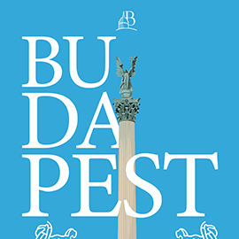
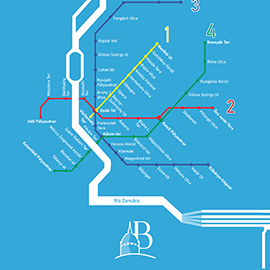
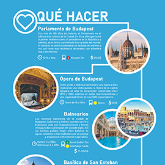

Budapest - Identidad turística_
Trabajo de identidad para la ciudad de Budapest, capital húngara: El proyecto constó de sus partes digitales (portales, redes sociales) y de su parte impresa (flyer turístico). Para llevarlo a cabo se realizó una identidad totalmente nueva para la ciudad europea tomando como referencias sus costumbres y lugares más importantes.
Volver a Proyectos